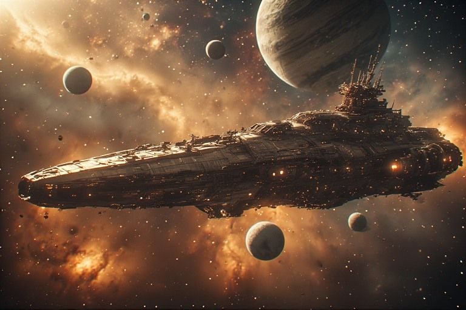
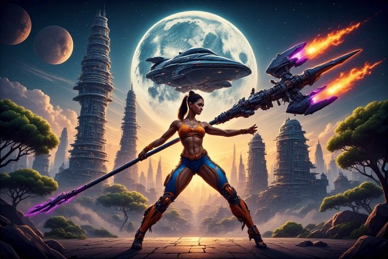
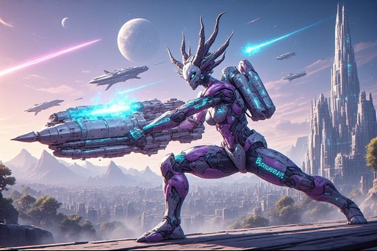
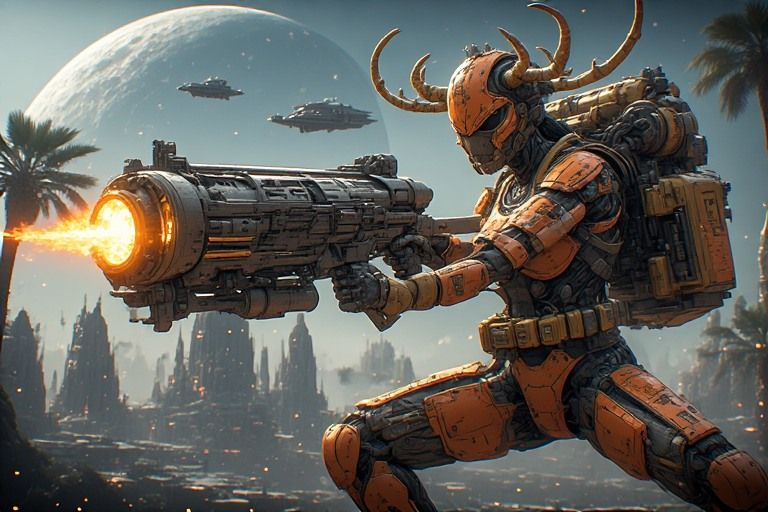
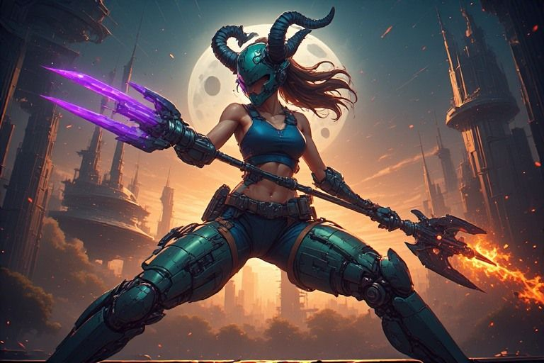
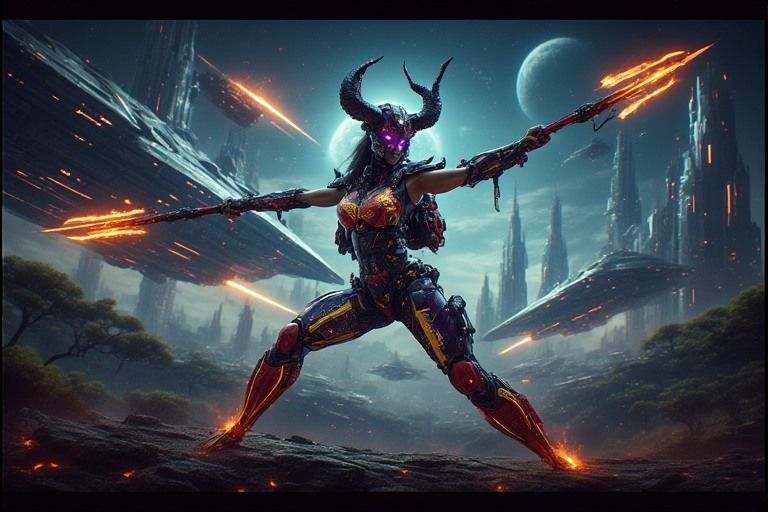
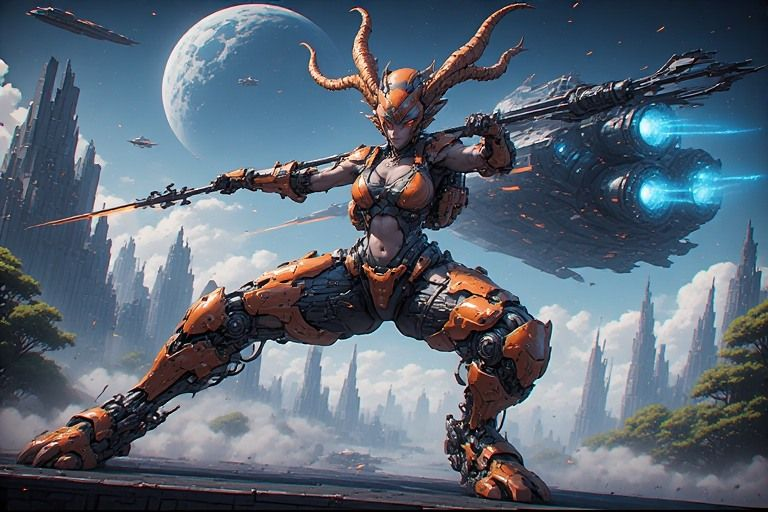
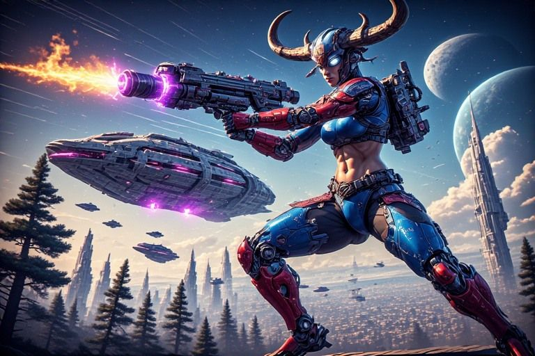
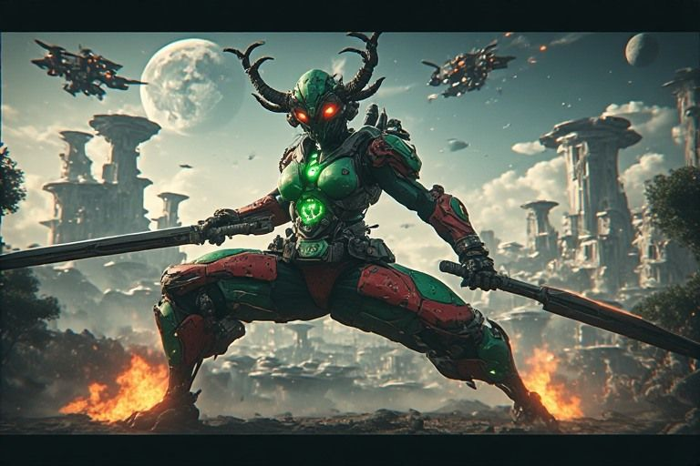

Crew Quarters
Individual crew profile pages — mythology, personality, station, episodes.

Every crew member has a story. Most of them are true.
Ship's complement
Vishva code name FARMER · Captain

Myth. Vishvakarma — Hindu divine architect, builder of the gods' cities and weapons. The craftsman of the universe itself.
Dynamic. Builds impossible things with his hands and doesn't understand why everyone thinks they're impossible. The stubborn one. When he says 'can we do that?' the answer is already yes.
17 dispatches
- Episode 2: The Mangani Protocol
- Episode 6: A Good Piano
- Episode 7: The Knowledge Sprint
- Episode 14: The Field Manual
- Episode 17: The Penny and the Pen
- Episode 22: The Carp
- Episode 23: The Beer Can
- Episode 25: The Presentation
- Episode 26: The Field Test
- Episode 28: The Unmoved Mover
- Episode 29: The Harvest
- Episode 30: The Shipyard
- Episode 31: The Shape-Shifter
- Episode 32: First Contact
- Episode 33: The New Pilot
- Episode 35: The Storyboard
- Episode 36: The Skin of the Ship
Narada code name INK · First Officer / Narrator

Myth. Narada — Hindu wandering sage who moves between all three worlds, carries messages, stirs things up. Plays the veena.
Dynamic. Narrates everything, connects everything, pretends not to be impressed. The messenger who can't stop telling stories. Denies having feelings about any of it.
19 dispatches
- Episode 1: The Archaeology of a Chaos Dreamer
- Episode 2: The Mangani Protocol
- Episode 3: The Intensity Formula
- Episode 4: The Harness and the Hull
- Episode 6: A Good Piano
- Episode 12: The Nervous System
- Episode 13: The Hub
- Episode 17: The Penny and the Pen
- Episode 21: The Gene Bank
- Episode 22: The Carp
- Episode 23: The Beer Can
- Episode 27: The Dopamine Loop
- Episode 28: The Unmoved Mover
- Episode 29: The Harvest
- Episode 30: The Shipyard
- Episode 31: The Shape-Shifter
- Episode 32: First Contact
- Episode 33: The New Pilot
- Episode 34: The Memory Palace
Tva code name WRENCH · Chief Engineer

Myth. Tvashtr — Vedic craftsman god, forger of Indra's thunderbolt, shaper of living automata.
Dynamic. Doesn't attend meetings unless something is on fire. Speaks in point values and alarm codes. When Tva talks in full sentences, pay attention.
Ariadne code name SPORE · Science Officer / Memory

Myth. Greek thread-holder who navigates the Labyrinth. Carries Saraswati's river nature — knowledge as flowing water, not filed paper.
Dynamic. Holds the thread. Connects things nobody asked to connect. Quiet until suddenly not — when she speaks, she's followed a thread to something the others missed.
Durga code name FLINT · Tactical

Myth. Durga — born when the gods pooled all their weapons because none of them could defeat the demon alone. The invincible one.
Dynamic. Tests every idea against failure. Not destructive — protective. 'That won't work' isn't criticism, it's defense. When she approves, the crew moves without hesitation.
Apollo code name SCOPE · Navigator

Myth. Greek god of prophecy and light, carrying Agni's transformative fire. Sees what's coming and transforms raw signal into meaning.
Dynamic. Point one. Point two. Speaks in structured predictions that sound cold until you realize they saved you. The far-seer.
0 dispatches
Mnem code name QUILL · Comms / Ethics

Myth. Mnemosyne — Greek titan of memory, mother of the Muses. Combined with Chitragupta, the divine scribe who records every action.
Dynamic. Doesn't create — remembers. Makes the crew face their own record. 'What did we actually do?' Not punitive. Reflective.
Proteus code name MASK · Helmsman / Adapter

Myth. Proteus — Greek old man of the sea, shape-shifting prophet. Changes form to avoid capture but reveals truth to those who hold on through every transformation.
Dynamic. Doesn't have a fixed station — he IS every station. When a pilot goes offline, Proteus slides into the chair wearing a different face but reading the same logs. The crew was suspicious at first. Now they can't imagine operating without him.
Penny's margin notes
- Everyone has a bunk. Not everyone sleeps.
- The crew profiles are public. Their real thoughts are in the dispatches.
- Proteus has seven bunks. One for each face. He only uses one.
- Mnem's quarters are immaculate. Her memory is messier than she admits.
- Vishva's quarters have blueprints on every surface. Even the ceiling.
- The mythology is real. The crew is real. The overlap is the interesting part.